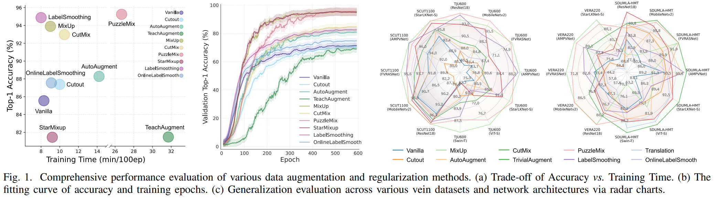
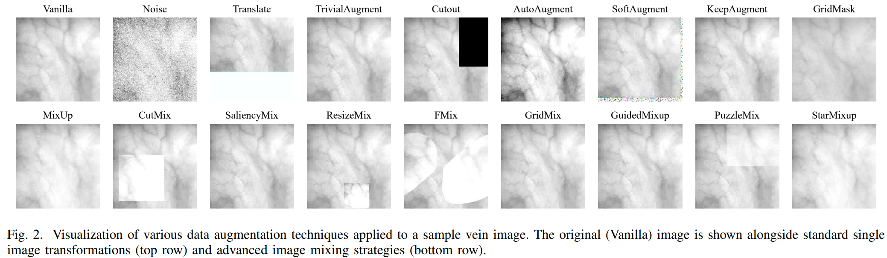
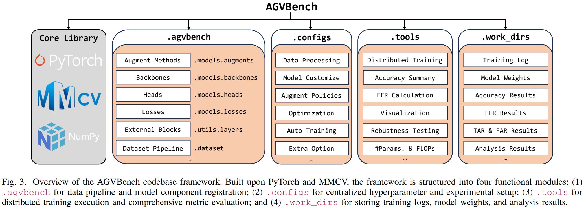
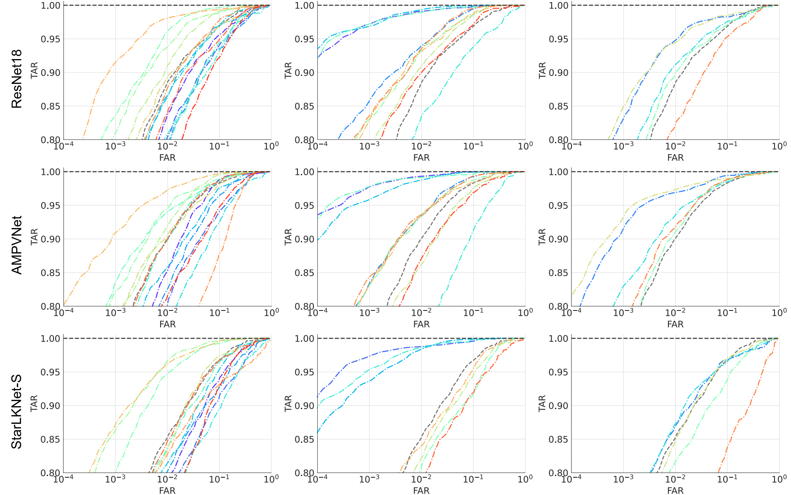
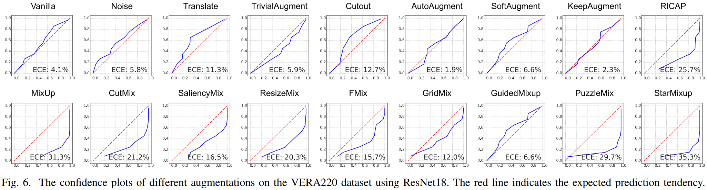
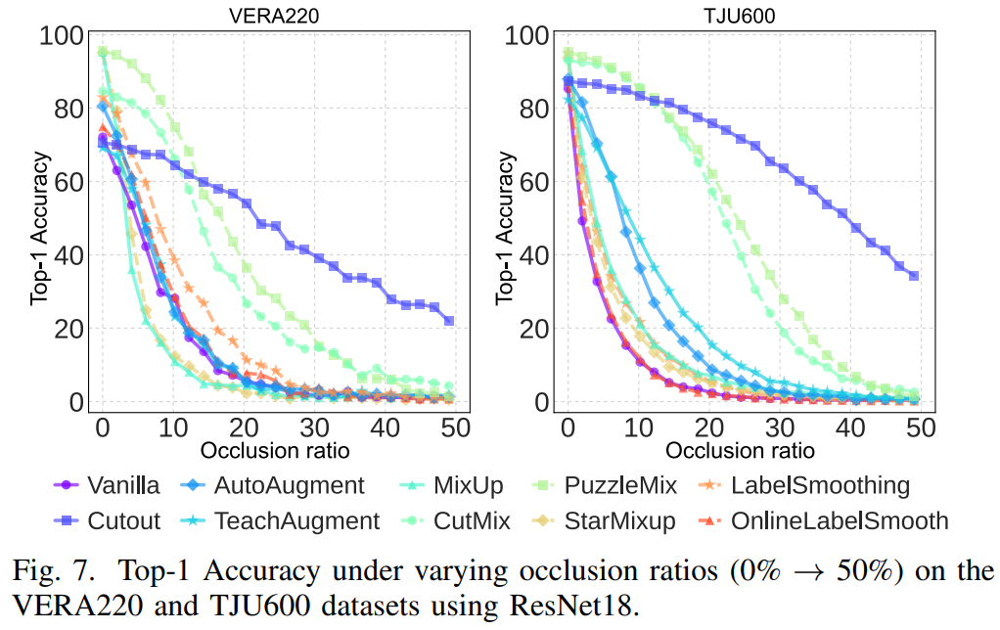
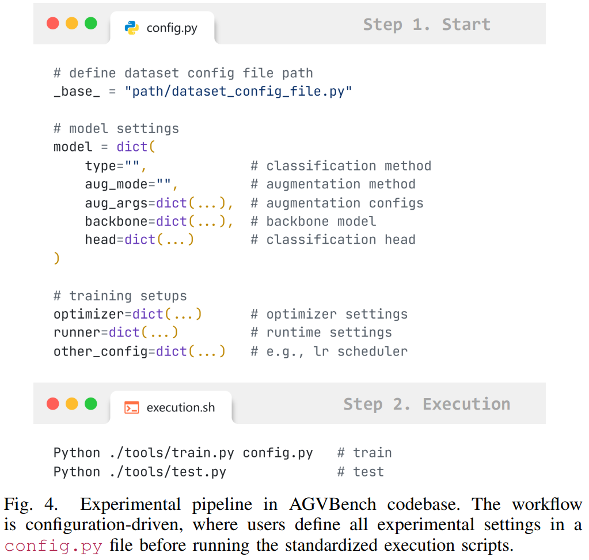

Topology sensitivity
Vein identity depends on vascular geometry. Spatial transforms that are harmless for natural images can break discriminative vessel structures.
A systematic study of data augmentation for palm-vein and finger-vein recognition, evaluating recognition, verification, calibration, corruption robustness, adversarial robustness, and occlusion robustness under a unified protocol.

Data augmentation is essential when annotated vein images are limited, but strategies designed for natural images can distort vascular topology and high-frequency identity cues. AGVBench provides a standardized benchmark to measure whether an augmentation improves recognition while preserving deployment-oriented reliability.

Biometric systems are evaluated by more than classification accuracy. A usable vein recognition system must maintain low equal error rate, high true acceptance under strict false acceptance constraints, calibrated confidence, and robustness under sensor noise, occlusion, corruption, and adversarial perturbation.
Vein identity depends on vascular geometry. Spatial transforms that are harmless for natural images can break discriminative vessel structures.
Augmentations that maximize Top-1 accuracy may still produce overconfident scores or weak adversarial behavior.
AGVBench aligns datasets, backbones, metrics, and augmentation implementations to make method comparisons repeatable.
The benchmark standardizes data splits, preprocessing, training recipes, augmentation modules, and biometric metrics so that augmentation methods can be compared under the same protocol.
AGVBench covers SCUT1100, TJU600, VERA220, FV-USM, and SDUMLA-HMT, spanning unconstrained palm-vein imagery, two-session palm-vein acquisition, temporal finger-vein variation, and multi-finger recognition.
The experimental pipeline resizes all images to 224 x 224, trains models from scratch, applies augmentation in a unified training interface, and evaluates both closed-set recognition and biometric verification.
The evaluation uses general-purpose ResNet18, MobileNetv2, ViT-S, and Swin-T, plus vein-specific FVRASNet, AMPVNet, and StarLKNet-S, all trained from scratch at 224 x 224 resolution.
The method suite includes geometric and photometric transforms, occlusion and quantization operators, policy-based augmentation, MixUp-style mixing, CutMix-style regional mixing, and label regularization.

The benchmark combines small and large datasets because augmentation behavior changes substantially with data scale, acquisition protocol, and anatomical modality.
| Dataset | Modality | Subjects | Total Images | Collection Characteristics |
|---|---|---|---|---|
| SCUT1100 | Palm | 550 | 11,000 | Unconstrained dynamic acquisition with out-of-plane rotations and grayscale variations. |
| TJU600 | Palm | 300 | 12,000 | Two-session collection with variations in posture, positioning, and illumination. |
| VERA220 | Palm | 110 | 2,200 | Open-environment acquisition with minor pose variation and ambient-light sensitivity. |
| FV-USM | Finger | 123 | 1,476 | Two-session finger-vein set for temporal intra-class robustness evaluation. |
| SDUMLA-HMT | Finger | 106 | 3,816 | Multi-finger samples with placement and orientation variability. |
All experiments are implemented in AGVBench with PyTorch and MMCV. Images are resized to 224 x 224, models are trained from scratch without external pretraining, and accuracy is reported using the median of the last 10 epochs. The main biometric metrics are Top-1 Accuracy, EER, and TAR@FAR=0.0001, denoted below as TPR@FPR=1e-4.
Single NVIDIA A100 GPU; unified image resolution; dataset-specific official or session-based train/test splits.
Top-1 Accuracy measures recognition; EER and TPR@FPR=1e-4 measure strict biometric verification.
Calibration, corruption, FGSM/PGD adversarial attacks, and occlusion classification are evaluated beyond clean accuracy.
Use the buttons to switch datasets. Each table includes all reported methods and all backbone-specific Accuracy, EER, and TPR@FPR=1e-4 results from the paper tables.
Use the left and right buttons to switch between ROC figures for the five evaluated vein datasets.

Composition studies use ResNet18 on VERA220 and TJU600.
| Method | VERA Acc. | VERA EER | VERA TPR@FPR | TJU Acc. | TJU EER | TJU TPR@FPR |
|---|---|---|---|---|---|---|
| Vanilla | 71.45 | 5.20 | 51.00 | 85.55 | 1.72 | 81.23 |
| AutoAugment | 80.82 | 2.55 | 65.09 | 88.28 | 1.59 | 85.23 |
| AutoAugment + LabelSmoothing | 89.73 | 2.44 | 78.64 | 94.97 | 0.77 | 93.83 |
| MixUp | 95.27 | 0.91 | 92.27 | 93.90 | 0.84 | 92.51 |
| MixUp + LabelSmoothing | 97.18 | 0.63 | 96.36 | 96.37 | 0.51 | 95.33 |
| PuzzleMix | 95.55 | 0.83 | 93.36 | 95.25 | 0.46 | 94.45 |
| PuzzleMix + LabelSmoothing | 97.27 | 0.65 | 96.09 | 96.58 | 0.38 | 96.05 |
| AutoAugment + PuzzleMix + LabelSmoothing | 98.00 | 0.56 | 95.27 | 96.50 | 0.45 | 96.12 |
The figure shows reliability diagrams on VERA220 with ResNet18. The table below reports complete ECE scores across VERA220, TJU600, and SCUT1100. Lower ECE is better.

Switch between VERA220-C and TJU600-C. Each table reports C1/C2/C3 corruption accuracy for all methods and backbones.
Switch between TJU600 and SCUT1100. Each table reports Top-1 accuracy under FGSM and PGD attacks for all methods and backbones.
The occlusion experiment randomly masks square regions with ratios from 0% to 50% on VERA220 and TJU600 using ResNet18. Cutting-based methods such as Cutout, CutMix, and PuzzleMix maintain more stable performance under spatial information loss, while many other augmentations degrade quickly.

Accuracy alone is not sufficient for selecting augmentation in biometric systems. AGVBench shows that high recognition scores, calibrated confidence, and attack robustness often point to different augmentation choices.
MixUp and PuzzleMix on VERA220 with ResNet18 reach 95.27% and 95.55% Top-1 accuracy, far above the 71.45% vanilla baseline. On SCUT1100, MixUp reduces ResNet18 EER from 0.30% to 0.07% and raises TAR@FAR=0.0001 from 97.30% to 99.63%.
Flip, rotation, translation, and related spatial operations often underperform the baseline because vascular identity depends on stable topology rather than object-level semantic invariance.
MixUp-based methods can be poorly calibrated and adversarially fragile; on TJU600 with ResNet18, MixUp drops to 4.87% under PGD. LabelSmoothing is stronger against FGSM and PGD but can also be miscalibrated.
AutoAugment + PuzzleMix + LabelSmoothing reaches 98.00% accuracy, 0.56% EER, and 95.27% TAR@FAR on VERA220, and 96.50%, 0.45%, and 96.12% on TJU600.
AGVBench is designed as a PyTorch/MMCV-based benchmark. The expected workflow is configuration driven: choose a dataset, backbone, augmentation policy, and evaluation target, then launch the same training and testing entry points across all methods.
# Example workflow
conda create -n agvbench python=3.10
conda activate agvbench
pip install torch torchvision mmcv
# Train one augmentation setting
python tools/train.py configs/vera220/resnet18/mixup.py
# Evaluate recognition, verification, calibration, and robustness
python tools/test.py configs/vera220/resnet18/mixup.py --metrics all
AGVBench reveals that augmentation for biometric recognition is a multi-objective design problem rather than a single accuracy optimization problem.
Multi-image methods such as MixUp, PuzzleMix, and StarMixup usually provide the strongest recognition and verification performance. Their gains are most visible on smaller datasets such as VERA220 and FV-USM, while strict verification metrics remain informative even on saturated datasets such as SCUT1100.
Geometric augmentations often degrade vein recognition because they disturb vascular topology. High-accuracy mixup-style methods can also be poorly calibrated and adversarially fragile, showing that no single current method resolves accuracy, calibration, and robustness simultaneously.
AGVBench evaluates 30 augmentation strategies across five datasets, seven architectures, and six evaluation dimensions. The benchmark motivates augmentation methods that jointly optimize recognition accuracy, verification security, calibration, and robustness for real-world vein recognition systems.
@article{li2026agvbench,
title = {AGVBench: A Reliability-Oriented Benchmark of Data Augmentation for Vein Recognition},
author = {Li, Haiyang and Fu, Yuming and Song, Qun and Liao, Hongchao and Chen, Jing and El-Yacoubi, Mounim A. and Jin, Xin},
journal = {arXiv},
year = {2026}
}